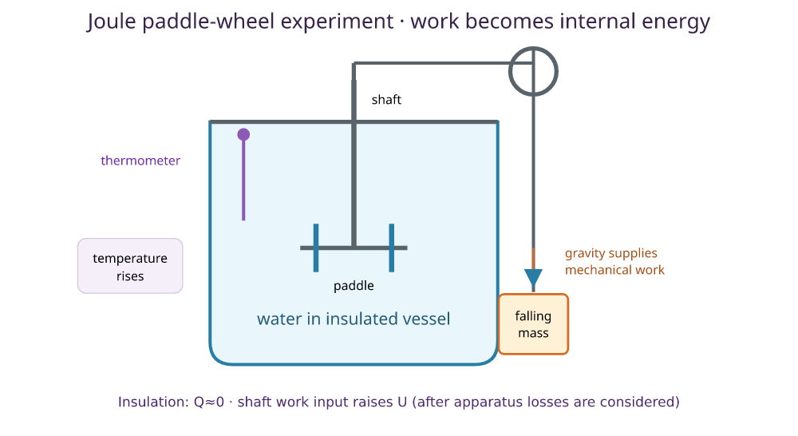
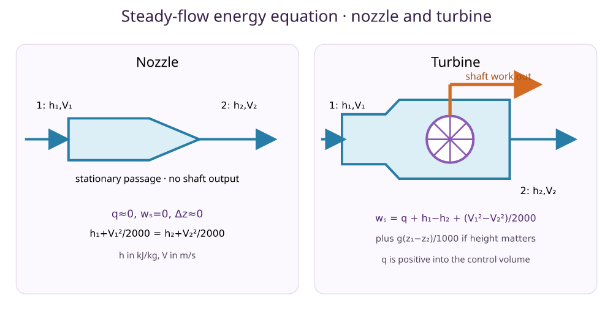
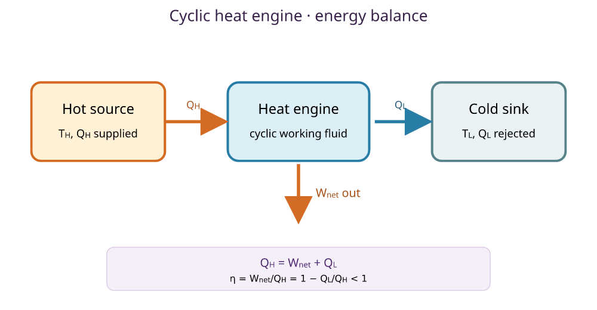
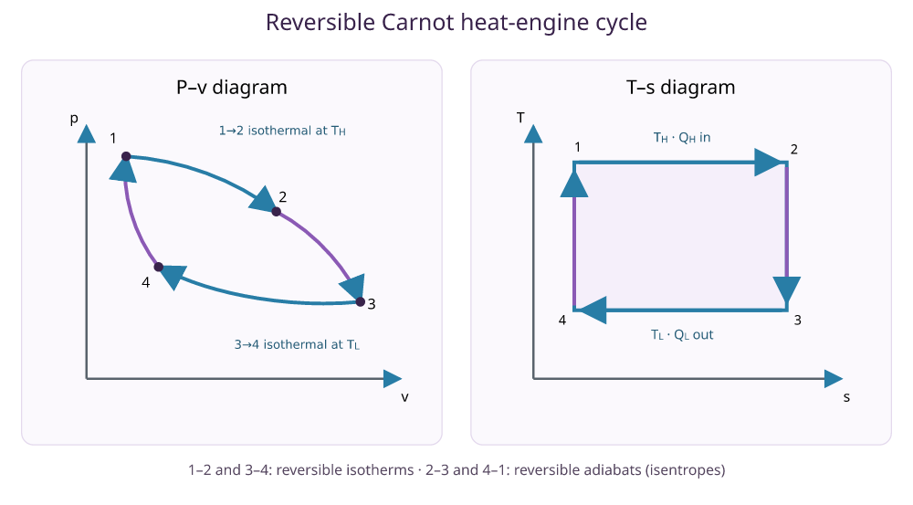

Updated supplied study solution — English only. આ નવો આપેલો ઉકેલ માત્ર અંગ્રેજીમાં છે; ભાષા બદલવાથી જવાબોનું ભાષાંતર થતું નથી. Unofficial model answers, not a GTU marking scheme; answers have not been independently verified.
Engineering Thermodynamics
All five printed questions, every subpart and both complete OR alternatives are represented. For exam practice, answer all common parts and one complete branch where OR is printed.
The supplied GTU paper identifies its English version as authentic. Prompts follow the source with minor wording normalisation for clarity; all printed numerical data, marks and OR choices are preserved.
Question 1
Printed English wording, marks and worked study answers
Q1(a)Explain with examples (1) open system (2) closed system (3) isolated system.3 marks
Worked study answer · 3 marks
| System | Mass across boundary? | Energy across boundary? | Example |
|---|---|---|---|
| Open (control volume) | Yes | May cross as heat/work and with flowing mass | Turbine, nozzle, compressor |
| Closed (fixed mass) | No | May cross as heat or work | Gas in a sealed piston–cylinder |
| Isolated | No | No heat or work crosses | Ideal rigid, insulated sealed vessel |
Isolation is an ideal boundary condition. A closed system can still exchange energy and may have a moving boundary, but no matter crosses it.
Q1(b)Write short note of thermodynamic equilibrium.4 marks
Worked study answer · 4 marks
A system is in thermodynamic equilibrium when it has no unbalanced driving potential and its macroscopic properties do not change with time. The complete condition includes:
- Thermal equilibrium: uniform temperature; no net heat flow within the system.
- Mechanical equilibrium: no unbalanced pressure or force causing motion or deformation.
- Chemical equilibrium: no net chemical reaction or species diffusion.
- Phase equilibrium: no net transfer of matter between phases.
All applicable forms must hold together. A system in equilibrium can be described by state properties; local uniformity is assumed for the simple single-state model.
Q1(c)Explain Zeroth law of thermodynamics with an example.7 marks
Worked study answer · 7 marks
Statement: If two systems A and B are each in thermal equilibrium with a third system C, then A and B are in thermal equilibrium with one another.
Let A and B each be separately brought into thermal contact with a thermometer C and allowed to settle. If both give the same stable reading, TA=TC and TB=TC, so TA=TB. If A and B are then placed in contact, there is no net heat transfer between them.
Example/applicability: A thermometer calibrated in degrees Celsius or kelvin measures a hot-water bath. An object and water bath at the same thermometer reading are in thermal equilibrium, subject to measurement uncertainty and negligible thermometer disturbance. The law makes temperature comparison and thermometry meaningful.

Q1(c) — ORDifferentiate (1) heat & work (2) shaft work & flow work (3) extensive property & intensive property.7 marks
Worked study answer · 7 marks
(1) Heat and work
| Heat | Work |
|---|---|
| Energy transfer solely because of a temperature difference. | Energy transfer by an organised interaction other than heat (force–displacement, shaft, electrical work, etc.). |
| Spontaneous direction is from higher to lower temperature. | Direction is set by the interaction and sign convention. |
| Both are boundary transfers during a process, path-dependent and measured in J; neither is a property stored in a system. | |
(2) Shaft work and flow work
| Shaft work | Flow work |
|---|---|
| Energy transferred across a control surface by a rotating shaft/torque, e.g. turbine output or compressor input. | Pressure work needed to push fluid into or out of a control volume; per unit mass it is pv. |
| Appears as a separate shaft-work term in SFEE. | Mass-flow energy is grouped with internal energy as enthalpy h=u+pv. |
(3) Extensive and intensive properties
| Extensive | Intensive |
|---|---|
| Scales with system size and is additive for non-interacting parts: mass, total volume, total internal energy. | Independent of system size; not additive: pressure, temperature, density. |
| Per-unit-mass specific quantities are generally intensive: v=V/m, u=U/m. | May vary from point to point if the system is not uniform. |
Question 2
Printed English wording, marks and worked study answers
Q2(a)Define enthalpy and write its unit in S.I. system.3 marks
Worked study answer · 3 marks
Enthalpy is the thermodynamic property defined by:
It groups internal energy with the pressure/flow-work contribution needed to move fluid across a control surface. SI unit of specific enthalpy h is J/kg (commonly kJ/kg); total enthalpy H is J. Enthalpy is a property, not heat.
Q2(b)Explain Joule's experiment with neat sketch.4 marks
Worked study answer · 4 marks
Joule used an insulated vessel containing water and a paddle wheel driven by a falling mass. The falling mass descends through a measured distance, turning the paddle via a cord and pulley. Paddle friction stirs the water, converting organised mechanical work into microscopic internal energy; the water temperature rises.
- Measure initial water temperature and mass.
- Allow a known falling mass to turn the paddle under controlled conditions.
- Measure the temperature rise after it settles.
- Compare mechanical work input with the corrected increase in water/apparatus internal energy.
For a well-insulated vessel, Q≈0 and the shaft work is input (work by the water is negative), so ΔU≈Win. This demonstrates equivalence of work and heat as energy transfers; it does not imply that heat is a stored substance.

Q2(c)List the assumptions for the steady flow energy equation and apply SFEE for a nozzle and turbine with sketch.7 marks
Worked study answer · 7 marks
Control-volume assumptions for the usual SFEE: (1) steady operation, so stored mass/energy and conditions at each fixed point do not vary with time; (2) mass conservation, with a single inlet/outlet mass rate equal; (3) inlet/outlet states are represented by uniform section-average properties; (4) changes in kinetic/potential energy or heat/work are neglected only where explicitly stated; chemical/nuclear energy changes are omitted unless relevant.
For one inlet and one outlet, heat q positive in and shaft work ws,out positive out:
Nozzle: stationary passage; ordinarily q≈0, ws=0 and Δz≈0. Thus h₁+V₁²/2=h₂+V₂²/2 (use consistent J/kg units); enthalpy drop raises jet speed. In kJ/kg, V²/2 becomes V²/2000.
Turbine: flowing fluid expands and turns a rotor; shaft work leaves. For q≈0 and negligible ΔKE, ΔPE: ws,out≈h₁−h₂ and Pout≈ṁ(h₁−h₂). If heat, velocity or elevation changes matter, keep those terms instead of dropping them.

Q2(a) — ORState and explain law of conservation of energy.3 marks
Worked study answer · 3 marks
Law: Energy can neither be created nor destroyed; it can only be transferred across a boundary or transformed from one form to another.
For a closed system, with heat into the system and work done by it positive:
The left side is net energy transferred; the right side is the change in stored energy. In a complete cycle the state returns to its start, so ΔE=0 and Qnet=Wnet. This conservation law alone does not determine process direction; the second law does.
Q2(b) — ORWrite four conditions for steady flow.4 marks
Worked study answer · 4 marks
- Mass within the control volume remains constant; there is no accumulation.
- At any fixed location, pressure, temperature, velocity and other flow properties are time-independent.
- Mass-flow, heat-transfer and shaft-work rates are constant in time.
- Continuity is obeyed: total mass inflow equals total mass outflow; for a single inlet/outlet, ṁ₁=ṁ₂.
Properties at inlet and outlet need not be equal; steady means they do not drift with time at their respective locations.
Q2(c) — ORGas turbine: air enters at 210 m/s and 6700 kJ/kg, ṁ=4.5 kg/s; exits at 150 m/s and 5480 kJ/kg. Heat loss is 50.4 kJ/kg. Find power developed.7 marks
Worked study answer · 7 marks
Given: h₁=6700, h₂=5480 kJ/kg; V₁=210, V₂=150 m/s; ṁ=4.5 kg/s; q=−50.4 kJ/kg. Assume steady single-inlet/outlet flow and negligible elevation change.
- Use SFEE with turbine shaft output positive: wout=q+(h₁−h₂)+(V₁²−V₂²)/2000.
- Δh contribution=6700−5480=1220 kJ/kg.
- Δke contribution=(210²−150²)/2000=(44100−22500)/2000=10.8 kJ/kg.
- wout=−50.4+1220+10.8=1180.4 kJ/kg.
- Pout=ṁwout=4.5(1180.4)=5311.8 kW ≈ 5.312 MW.
The printed English says “exists” at the outlet, which is interpreted as “exits” (consistent with the Gujarati line). The specified heat loss is negative heat transfer and is included once.
Question 3
Printed English wording, marks and worked study answers
Q3(a)Define (1) Heat engine (2) Heat source (3) Heat sink.3 marks
Worked study answer · 3 marks
- Heat engine: a cyclic device that receives heat from a high-temperature source, delivers net work and rejects remaining heat to a lower-temperature sink.
- Heat source: a body/reservoir supplying heat to the working substance; ideally its temperature changes negligibly.
- Heat sink: a body/reservoir receiving rejected heat; ideally its temperature changes negligibly.
Q3(b)Write equation of COP for refrigerator and heat pump.4 marks
Worked study answer · 4 marks
For a refrigerator, the desired effect is cooling the low-temperature space; for a heat pump, it is heating the warm space.
COPHP = QH/Win
From the cycle energy balance, QH=QL+Win, so COPHP=COPR+1. Use positive heat/work magnitudes. COP is not a thermal efficiency and may exceed one.
Q3(c)A heat engine receives energy at 9500 kJ/min and does work at 6000 kJ/min. Find thermal efficiency and heat-rejection rate.7 marks
Worked study answer · 7 marks
Given: Q̇H=9500 kJ/min, Ẇnet=6000 kJ/min. Treat as a cyclic engine at steady operation.
- First-law energy balance: Q̇H=Ẇnet+Q̇L.
- Q̇L=9500−6000=3500 kJ/min rejected.
- ηth=Ẇnet/Q̇H=6000/9500=0.63158=63.16%.
In kW (optional): heat input 158.33 kW, work output 100.00 kW, heat rejection 58.33 kW. Check: 100.00+58.33≈158.33 kW.

Q3(a) — ORWhat is entropy?3 marks
Worked study answer · 3 marks
Entropy S is a thermodynamic property that measures energy dispersal and provides a criterion for process direction. It is defined for a reversible heat transfer by dS=δQrev/T (specific form ds=δqrev/T). Its SI unit is J/K; specific entropy is J/(kg·K).
For an isolated system, entropy cannot decrease: it remains constant for an ideal reversible process and increases when irreversibilities generate entropy.
Q3(b) — ORState 3rd law of thermodynamics.4 marks
Worked study answer · 4 marks
Third law (Planck statement): the entropy of a pure, perfectly crystalline substance approaches zero as its temperature approaches absolute zero, 0 K.
The perfect-crystal condition matters; real disordered solids may have residual entropy. The law supplies a reference for absolute entropy. Its unattainability formulation says that absolute zero cannot be reached by a finite sequence of ordinary cooling operations.
Q3(c) — OROne heat engine works between 160°C and 750°C. Find its maximum possible thermal efficiency.7 marks
Worked study answer · 7 marks
Maximum possible efficiency is the reversible Carnot efficiency between the two reservoir temperatures. Convert to kelvin first:
- TL=160+273.15=433.15 K; TH=750+273.15=1023.15 K.
- ηmax=ηCarnot=1−TL/TH.
- ηmax=1−433.15/1023.15=0.57665.
Maximum thermal efficiency ≈57.67%. A real engine operating between the same reservoirs has a lower efficiency. Celsius must not be used in the ratio.

Question 4
Printed English wording, marks and worked study answers
Q4(a)Explain concept of ideal gas. Write characteristic equation for ideal gas.3 marks
Worked study answer · 3 marks
An ideal gas is a model in which molecular volume and intermolecular forces are neglected in the equation of state. It obeys:
Use absolute pressure and kelvin. In the ideal-gas model, internal energy and enthalpy depend on temperature alone. The approximation is most useful at low density, away from condensation; real gases can deviate at high pressure or near saturation.
Q4(b)Explain (1) specific heat at constant pressure (Cp) (2) specific heat at constant volume (Cv).4 marks
Worked study answer · 4 marks
Specific heat at constant pressure Cp: heat required per unit mass to raise temperature by one kelvin in a constant-pressure process (for an ideal gas, Cp=(∂h/∂T)p).
Specific heat at constant volume Cv: heat required per unit mass per kelvin in a constant-volume process (for an ideal gas, Cv=(∂u/∂T)v).
SI units: J/(kg·K), commonly kJ/(kg·K). For an ideal gas Cp>Cv, because at constant pressure some supplied heat supports expansion work as well as increasing internal energy.
Q4(c)A gas has temperature 300°C, pressure 10 bar, volume 14.5 m³ and mass 32 kg. Find its characteristic gas constant.7 marks
Worked study answer · 7 marks
Given/assumption: T=300+273.15=573.15 K; interpret the stated p=10 bar as absolute (the paper does not say gauge), so p=1000 kPa; V=14.5 m³; m=32 kg. Assume the gas follows the ideal-gas equation.
- From pV=mRT, solve R=pV/(mT).
- R=[(1000 kPa)(14.5 m³)]/[(32 kg)(573.15 K)].
- Because 1 kPa·m³=1 kJ, R=14500/18340.8=0.79059 kJ/(kg·K) (≈790.6 J/(kg·K)).
Use absolute temperature and consistent pressure/energy units. The given gas need not be air; the result is its specific characteristic constant under the ideal-gas model.
Q4(a) — ORWrite statement of (1) Boyle's law (2) Charles' law.3 marks
Worked study answer · 3 marks
- Boyle’s law: for a fixed mass at constant absolute temperature, pV=constant; pressure varies inversely with volume.
- Charles’ law: for a fixed mass at constant pressure, V/T=constant; volume varies directly with absolute temperature.
In both laws, T is in kelvin and p is absolute.


Q4(b) — ORDerive Cp−Cv=R with usual notations.4 marks
Worked study answer · 4 marks
For a fixed-composition ideal gas, h=u+pv and pv=RT per unit mass.
- Substitute the equation of state into enthalpy: h=u+RT.
- Differentiate with respect to temperature: dh/ dT=du/dT+R, since R is constant for the gas.
- For an ideal gas, Cp=(∂h/∂T)p and Cv=(∂u/∂T)v; u and h depend on T only.
- Therefore Cp=Cv+R, or Cp−Cv=R.
All terms are specific quantities (kJ/(kg·K)). The proof assumes ideal-gas behaviour.
Q4(c) — ORAn ideal gas is at 32°C, 2 bar and 1 m³. It is compressed to 16 bar and 0.3 m³. Find its final temperature.7 marks
Worked study answer · 7 marks
For fixed gas mass and constant characteristic R, pV/T is constant. Use absolute temperatures and pressure ratios:
- T₁=32+273.15=305.15 K.
- T₂=T₁(p₂V₂)/(p₁V₁)=305.15[(16 bar)(0.3 m³)]/[(2 bar)(1 m³)].
- Pressure/volume ratio=(16×0.3)/(2×1)=2.4.
- T₂=305.15(2.4)=732.36 K.
- In Celsius, t₂=732.36−273.15=459.21°C.
Assume the mass is unchanged and the ideal-gas model applies. The stated pressures are used as absolute; if they were gauge pressures, atmospheric pressure would first have to be added.
Question 5
Printed English wording, marks and worked study answers
Q5(a)What is air-standard efficiency?3 marks
Worked study answer · 3 marks
Air-standard efficiency is the thermal efficiency of an idealised air-standard power cycle:
The working fluid is treated as a fixed mass of air in a closed cycle; actual combustion and exhaust are replaced by external heat addition and heat rejection, and the air is commonly modelled as an ideal gas. It is a cycle-model efficiency, not an actual engine brake efficiency.
Q5(b)Explain Carnot cycle with P–V and T–S diagram. State two applications of Carnot cycle.4 marks
Worked study answer · 4 marks
The reversible Carnot heat-engine cycle has four processes:
- 1→2: reversible isothermal expansion at TH, absorbing heat QH.
- 2→3: reversible adiabatic (isentropic) expansion from TH to TL.
- 3→4: reversible isothermal compression at TL, rejecting heat QL.
- 4→1: reversible adiabatic (isentropic) compression back to TH.
On T–s, the isotherms are horizontal and the isentropes vertical; the enclosed area is net work. On P–V, the cycle is a closed clockwise engine loop.
Applications: (1) establishes the maximum possible heat-engine efficiency between two reservoirs, ηC=1−TL/TH, to benchmark real engines; (2) provides the reversible upper-limit COP for refrigeration and heat-pump systems when the cycle is reversed. It is a theoretical standard, not a practical finite-power engine.
Q5(c)A gas turbine works on the Brayton cycle with pressure ratio 6. Find air-standard efficiency. Take γ=1.4.7 marks
Worked study answer · 7 marks
Assume the ideal Brayton cycle with air-standard constant specific heats and internally reversible compression/expansion. For pressure ratio rp=p₂/p₁=p₃/p₄:
- Exponent (γ−1)/γ=(1.4−1)/1.4=0.285714.
- 60.285714=1.66851.
- η=1−1/1.66851=0.400663.
Air-standard efficiency ≈40.07%. This assumes ideal-gas properties, no pressure losses and ideal isentropic compressor/turbine processes.
Q5(a) — ORDifferentiate Otto cycle and Diesel cycle.3 marks
Worked study answer · 3 marks
| Otto cycle | Diesel cycle |
|---|---|
| Ideal model of spark-ignition engines. | Ideal model of compression-ignition engines. |
| Heat addition 2→3 at constant volume. | Heat addition 2→3 at constant pressure (ideal cycle). |
| Heat rejection is constant volume; the other two processes are isentropic. | Heat rejection is constant volume; the other two processes are isentropic. |
| Efficiency formula uses compression ratio r and γ. | Efficiency also depends on cut-off ratio rc as well as r and γ. |
These are air-standard ideal cycles, not exact descriptions of real combustion.
Q5(b) — ORState two applications of Brayton cycle.4 marks
Worked study answer · 4 marks
- Aircraft gas-turbine propulsion: turbojet, turbofan and turboprop engines use Brayton-cycle principles; the open cycle includes continuous air intake and exhaust.
- Gas-turbine power generation: stationary industrial and utility gas turbines, often in simple or combined-cycle plants.
Other uses include marine propulsion and mechanical drives. The ideal closed air-standard Brayton cycle models the compressor, heat addition, turbine and heat rejection processes.
Q5(c) — ORA Carnot engine between 650 K and 310 K produces 150 kJ of work. Find (a) thermal efficiency (b) heat added during the process.7 marks
Worked study answer · 7 marks
Given: TH=650 K, TL=310 K, Wnet=150 kJ per cycle. Temperatures are already absolute.
- Reversible Carnot efficiency: η=1−TL/TH=1−310/650=0.523077=52.31%.
- η=Wnet/QH, hence QH=Wnet/η=150/0.523077=286.76 kJ per cycle.
- As a check, QL=QH−W=286.76−150=136.76 kJ per cycle.
The requested heat added is QH, not net heat.